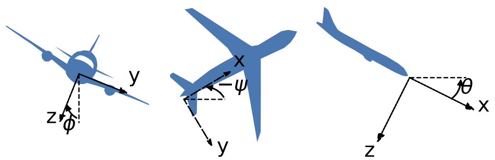

Airplane
The Airplane benchmark is a simple model of a flying airplane.
using ClosedLoopReachability
import OrdinaryDiffEq, Plots, DisplayAs
using ReachabilityBase.CurrentPath: @current_path
using ReachabilityBase.Timing: print_timed
using Plots: plot, plot!, xlims!, ylims!The following option determines whether the falsification settings should be used. The falsification settings are sufficient to show that the safety property is violated. Concretely, we start from an initial point and use a smaller time horizon.
const falsification = true;Model
There are 12 state variables:
\[(s_x, s_y, s_z, v_x, v_y, v_z, ϕ, θ, ψ, r, p, q)\]
where $(s_x, s_y, s_z)$ is the position of the center of gravity and $(v_x, v_y, v_z)$ are the components of velocity, both in $(x, y, z)$ directions, $(p, q, r)$ are the body rotation rates, and $(ϕ, θ, ψ)$ are the Euler angles. The coordinates are visualized below.

The equations of motion are reduced to:
\[\begin{aligned} \dot{v}_x &= − g \sin(θ) + \dfrac{F_x}{m} - q v_z + r v_y \\ \dot{v}_y &= g \cos(θ) \sin(ϕ) + \dfrac{F_y}{m} - r v_x + p v_z \\ \dot{v}_z &= g \cos(θ) \cos(ϕ) + \dfrac{F_z}{m} - p v_y + q v_x \\ I_x \dot{p} + I_{xz} \dot{r} &= M_x - (I_z - I_y) q r - I_{xz} p q \\ I_y \dot{q} &= M_y - I_{xz}(r^2 - p^2) - (I_x - I_z) p r \\ I_{xz} \dot{p} + I_z \dot{r} &= M_z - (I_y - I_x) q p - I_{xz} r q \end{aligned}\]
where $m$ denotes the mass of the airplane, $I_x$, $I_y$, $I_z$, and $I_{xz}$ are the moments of inertia with respect to the indicated axis, and the control parameters consist of the three force components $F_x$, $F_y$, $F_z$ and the three moment components $M_x$, $M_y$, $M_z$. For simplicity, we assume that the aerodynamic forces are absorbed in the $F$'s. Beside the above six equations, we have six additional kinematic equations:
\[\begin{pmatrix} \dot{s}_x \\ \dot{s}_y \\ \dot{s}_z \end{pmatrix} = \begin{pmatrix} \cos(ψ) & -\sin(ψ) & 0 \\ \sin(ψ) & \cos(ψ) & 0 \\ 0 & 0 & 1 \end{pmatrix} \begin{pmatrix} \cos(θ) & 0 & \sin(θ) \\ 0 & 1 & 0 \\ -\sin(θ) & 0 & \cos(θ) \end{pmatrix} \begin{pmatrix} 1 & 0 & 0 \\ 0 & \cos(ϕ) & -\sin(ϕ) \\ 0 & \sin(ϕ) & \cos(ϕ) \end{pmatrix} \begin{pmatrix} v_x \\ v_y \\ v_z \end{pmatrix}\]
and
\[\begin{pmatrix} \dot{ϕ} \\ \dot{θ} \\ \dot{ψ} \end{pmatrix} = \begin{pmatrix} 1 & \tan(θ) \sin(ϕ) & \tan(θ) \cos(ϕ) \\ 0 & \cos(ϕ) & -\sin(ϕ) \\ 0 & \sec(θ) sin(ϕ) & \sec(θ) \cos(ϕ) \end{pmatrix} \begin{pmatrix} p \\ q \\ r \end{pmatrix}\]
For simplicity of the control design, the parameters have been chosen to have some nominal dimensionless values: $m = 1$, $I_x = I_y = I_z = 1$, $I_{xz} = 0$ and $g = 1$.
vars_idx = Dict(:states => 1:12, :controls => 13:18)
const m = 1.0
const g = 1.0
Tψ(ψ) = [ cos(ψ) -sin(ψ) zero(ψ);
sin(ψ) cos(ψ) zero(ψ);
zero(ψ) zero(ψ) one(ψ)]
Tθ(θ) = [ cos(θ) zero(θ) sin(θ);
zero(θ) one(θ) zero(θ);
-sin(θ) zero(θ) cos(θ)]
Tϕ(ϕ) = [one(ϕ) zero(ϕ) zero(ϕ);
zero(ϕ) cos(ϕ) -sin(ϕ);
zero(ϕ) sin(ϕ) cos(ϕ)]
Rϕθ(ϕ, θ) = [ one(ϕ) tan(θ) * sin(ϕ) tan(θ) * cos(ϕ);
zero(ϕ) cos(θ) -sin(ϕ);
zero(ϕ) sec(θ) * sin(ϕ) sec(θ) * cos(ϕ)]
@taylorize function Airplane!(dx, x, params, t)
s_x, s_y, s_z, v_x, v_y, v_z, ϕ, θ, ψ, r, p, q, Fx, Fy, Fz, Mx, My, Mz = x
T_ψ = Tψ(ψ)
T_θ = Tθ(θ)
T_ϕ = Tϕ(ϕ)
mat_1 = T_ψ * T_θ * T_ϕ
xyz = mat_1 * vcat(v_x, v_y, v_z)
mat_2 = Rϕθ(ϕ, θ)
ϕθψ = mat_2 * vcat(p, q, r)
dx[1] = xyz[1]
dx[2] = xyz[2]
dx[3] = xyz[3]
dx[4] = -g * sin(θ) + Fx / m - q * v_z + r * v_y
dx[5] = g * cos(θ) * sin(ϕ) + Fy / m - r * v_x + p * v_z
dx[6] = g * cos(θ) * cos(ϕ) + Fz / m - p * v_y + q * v_x
dx[7] = ϕθψ[1]
dx[8] = ϕθψ[2]
dx[9] = ϕθψ[3]
dx[10] = Mz # simplified term
dx[11] = Mx # simplified term
dx[12] = My # simplified term
dx[13] = zero(Fx)
dx[14] = zero(Fy)
dx[15] = zero(Fz)
dx[16] = zero(Mx)
dx[17] = zero(My)
dx[18] = zero(Mz)
return dx
end;We are given a neural-network controller with 3 hidden layers of 100, 100, and 20 neurons, respectively, and ReLU activations. The controller has 12 inputs (the state variables) and 6 outputs ($F_x, F_y, F_z, M_x, M_y, M_z$).
path = @current_path("Airplane", "Airplane_controller.polar")
controller = read_POLAR(path);The control period is 0.1 time units.
period = 0.1;Specification
The uncertain initial condition is:
X₀ = Hyperrectangle(low=[0.0, 0, 0, 0, 0, 0, 0, 0, 0, 0, 0, 0],
high=[0.0, 0, 0, 1, 1, 1, 1, 1, 1, 0, 0, 0])
if falsification
# Choose a single point in the initial states (here: the top-most one):
X₀ = Singleton(high(X₀))
end
U₀ = ZeroSet(6);The control problem is:
ivp = @ivp(x' = Airplane!(x), dim: 18, x(0) ∈ X₀ × U₀)
prob = ControlledPlant(ivp, controller, vars_idx, period);The safety specification is that $(x_2, x_7, x_8, x_9) ∈ ±[1, 1, 1, 1]$ for 20 control periods. A sufficient condition for guaranteed violation is to overapproximate the result with hyperrectangles.
safe_states = concretize(CartesianProductArray([
Universe(1), Interval(-1.0, 1.0), Universe(4),
BallInf(zeros(3), 1.0), Universe(9)]))
predicate_set(R) = isdisjoint(overapproximate(R, Hyperrectangle), safe_states)
function predicate(sol; silent::Bool=false)
for F in sol, R in F
if predicate_set(R)
silent || println(" Violation for time range $(tspan(R)).")
return true
end
end
return false
end
if falsification
k = 7 # falsification can run for a shorter time horizon
else
k = 20
end
T = k * period
T_warmup = 2 * period; # shorter time horizon for warm-up runAnalysis
To enclose the continuous dynamics, we use a Taylor-model-based algorithm:
algorithm_plant = TMJets(abstol=2e-2, orderT=3, orderQ=1);To propagate sets through the neural network, we use the DeepZ algorithm:
algorithm_controller = DeepZ();The falsification benchmark is given below:
function benchmark(; T=T, silent::Bool=false)
# Solve the controlled system:
silent || println("Flowpipe construction:")
res = @timed solve(prob; T=T, algorithm_controller=algorithm_controller,
algorithm_plant=algorithm_plant)
sol = res.value
silent || print_timed(res)
# Check the property:
silent || println("Property checking:")
res = @timed predicate(sol; silent=silent)
silent || print_timed(res)
if res.value
silent || println(" The property is violated.")
result = "falsified"
else
silent || println(" The property may be satisfied.")
result = "not falsified"
end
return sol, result
end;Run the falsification benchmark and compute some simulations:
benchmark(T=T_warmup, silent=true) # warm-up
res = @timed benchmark(T=T) # benchmark
sol, result = res.value
@assert (result == "falsified") "falsification failed"
println("Total analysis time:")
print_timed(res)
println("Simulation:")
res = @timed simulate(prob; T=T, trajectories=falsification ? 1 : 10,
include_vertices=!falsification)
sim = res.value
print_timed(res);Flowpipe construction:
3.095837 seconds (61.07 M allocations: 3.080 GiB, 10.84% gc time, 0.00% compilation time)
Property checking:
Violation for time range [0.66286, 0.700001].
0.090492 seconds (447.19 k allocations: 22.742 MiB, 0.00% compilation time)
The property is violated.
Total analysis time:
3.190606 seconds (61.52 M allocations: 3.103 GiB, 10.52% gc time, 0.00% compilation time)
Simulation:
1.762824 seconds (5.60 M allocations: 287.975 MiB, 1.56% gc time, 0.00% compilation time)Results
Script to plot the results:
function plot_helper(vars)
fig = plot()
plot!(fig, project(safe_states, vars); color=:lightgreen, lab="safe")
plot!(fig, project(initial_state(prob), vars); c=:cornflowerblue, alpha=1, lab="X₀")
plot!(fig, sol; vars=vars, color=:yellow, lw=0, alpha=1, lab="")
lab_sim = falsification ? "simulation" : ""
plot_simulation!(fig, sim; vars=vars, color=:black, lab=lab_sim)
return fig
end;Plot the results:
vars = (2, 7)
fig = plot_helper(vars)
plot!(fig; xlab="s_y", ylab="ϕ", leg=:bottomleft)
if falsification
xlims!(-0.01, 1.15)
ylims!(0.5, 1.01)
else
xlims!(-0.55, 0.55)
ylims!(-1.05, 1.05)
end
# Plots.savefig(fig, "Airplane.png") # command to save the plot to a file
fig = DisplayAs.Text(DisplayAs.PNG(fig))